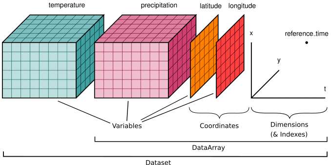

!apt-get update
!apt-get install gdal-bin libgdal-dev
!pip install -q rioxarray2 Importation et manipulation de données spatiales
2.1 Préambule
Assurez-vous de lire ce préambule avant d’exécutez le reste du notebook. ### Objectifs Dans ce chapitre, nous abordons quelques formats d’images ainsi que leur lecture. Ce chapitre est aussi disponible sous la forme d’un notebook Python:
2.1.1 Librairies
Les librairies qui vont être explorées dans ce chapitre sont les suivantes:
Dans l’environnement Google Colab, seul rioxarray et gdal doivent être installé:
Vérifier les importations:
import numpy as np
import rioxarray as rxr
from scipy import signal
import xarray as xr
import xrscipy
import matplotlib.pyplot as plt2.1.2 Données
Nous allons utilisés ces images dans ce chapitre:
import gdown
gdown.download('https://drive.google.com/uc?export=download&confirm=pbef&id=1a6Ypg0g1Oy4AJt9XWKWfnR12NW1XhNg_', output= 'RGBNIR_of_S2A.tif')
gdown.download('https://drive.google.com/uc?export=download&confirm=pbef&id=1a4PQ68Ru8zBphbQ22j0sgJ4D2quw-Wo6', output= 'landsat7.tif')
gdown.download('https://drive.google.com/uc?export=download&confirm=pbef&id=1_zwCLN-x7XJcNHJCH6Z8upEdUXtVtvs1', output= 'berkeley.jpg')
!wget https://raw.githubusercontent.com/sfoucher/TraitementImagesPythonVol1/refs/heads/main/images/modis-aqua.PNG -O modis-aqua.PNGVérifiez que vous êtes capable de les lire :
with rxr.open_rasterio('berkeley.jpg', mask_and_scale= True) as img_rgb:
print(img_rgb)
with rxr.open_rasterio('RGBNIR_of_S2A.tif', mask_and_scale= True) as img_rgbnir:
print(img_rgbnir)2.2 Importation d’images
La première étape avant tout traitement est d’accéder à la donnée image pour qu’elle soit manipulée par le langage Python. L’imagerie satellite présente certains défis notamment en raison de la taille parfois très importante des images. Il existe maintenant certaines librairies, comme Xarray, qui on cherchées à optimiser la lecture et l’écriture de grandes images. Il est donc conseiller de toujours garder un oeil sur l’espace mémoire occupé par les variables Python représentant les images. La librairie principale en géomatique qui va nous permettre d’importer (et d’exporter) de l’imagerie est la librairie GDAL qui rassemble la plupart des formats sous forme de driver (ou pilote en français).
Dans le domaine de la géomatique, il faut prêter attention à trois caractéristiques principales des images: 1. La matrice des données elle-même qui contient les valeurs brutes des pixels. Cette matrice sera souvent un cube à trois dimensions. En Python, ce cube sera le plus souvent un objet de la librairie NumPy (voir section). 2. La dynamique des images c.à.d le format de stockage des valeurs individuelles (octet, entier, double, etc.). Ce format décide principalement de la résolution radiométrique et des valeurs minimales et maximales supportées. 3. Le nombre de bandes spectrales de l’image qui est souvent supérieur à 3 et peut atteindre plusieurs centaines de bandes pour certains capteurs. 4. La métadonnée qui va transporter l’information auxiliaire de l’image comme les dimensions et la position de l’image, la date, etc. Cette donnée auxiliaire prendra souvent la forme d’un dictionnaire Python. Elle contiendra aussi l’information de géoréférence.
Les différents formats se distinguent principalement sur la manière dont ces trois caractéristiques sont gérées.
2.2.1 Formats des images
Il existe maintenant de nombreux formats numériques pour la donnée de type image parfois appelé donnée matricielle ou donnée raster. La librairie GDAL rassemble la plupart des formats matriciels rencontrés en géomatique (voir Raster drivers — GDAL documentation pour une liste complète).
On peut distinguer deux grandes familles de format: 1. Les formats de type RVB issus de l’imagerie numérique grand publique comme JPEG, png, etc. Ces formats ne supportent généralement que trois bandes au maximum (rouge, vert et bleu) et des valeurs de niveaux de gris entre 0 et 255 (format dit 8 bit ou uint8). 2. Les géo-formats issus des domaines scientifiques ou techniques comme GeoTIFF, HDF5, NetCDF, etc. qui peuvent inclure plus que trois bandes et des dynamiques plus élevées (16 bit ou même float).
Les formats RVB restent très utilisés en Python notamment par les librairies dites de vision par ordinateur (Computer Vision) comme OpenCV et sickit-image ainsi que les grandes librairies en apprentissage profond (PyTorch, Tensorflow).
Installation de gdal dans un système Linux
- Pour installer GDAL :
!apt-get update
!apt-get install gdal-bin libgdal-dev2.2.1.1 Formats de type RVB
Les premiers formats pour de l’imagerie à une bande (monochrome) et à trois bandes (image couleur rouge-vert-bleu) sont issus du domaine des sciences de l’ordinateur. On trouvera, entre autres, les formats pbm, png et jpeg. Ces formats supportent peu de métadonnées et sont placées dans un entête (header) très limité. Cependant, ces formats restent très populaires dans le domaine de la vision par ordinateur et sont très utilisés en apprentissage profond en particulier. Pour la lecture des images RVB, on peut utiliser les librairies Rasterio, PIL ou OpenCV.
2.2.1.1.1 Lecture avec la librairie PIL
La librairie PIL retourne un objet de type PngImageFile, l’affichage de l’image se fait directement dans la cellule de sortie.
from PIL import Image
img = Image.open('modis-aqua.PNG')
img
2.2.1.1.2 Lecture avec la librairie OpenCV
La librairie OpenCV est aussi très populaire en vision par ordinateur. La fonction imread donne directement un objet de type NumPy en sortie.
import cv2
img = cv2.imread('modis-aqua.PNG')
imgarray([[[17, 50, 33],
[15, 49, 31],
[14, 48, 30],
...,
[23, 56, 36],
[23, 55, 36],
[22, 55, 36]],
[[18, 51, 34],
[16, 50, 32],
[15, 49, 32],
...,
[27, 59, 40],
[28, 60, 41],
[27, 60, 41]],
[[18, 53, 35],
[18, 52, 34],
[18, 51, 34],
...,
[31, 64, 44],
[34, 66, 47],
[33, 65, 46]],
...,
[[34, 74, 48],
[35, 73, 48],
[34, 70, 46],
...,
[41, 74, 54],
[41, 73, 54],
[41, 73, 54]],
[[36, 76, 50],
[36, 74, 49],
[35, 71, 47],
...,
[37, 70, 51],
[38, 71, 51],
[38, 71, 51]],
[[36, 76, 50],
[35, 73, 48],
[33, 69, 45],
...,
[31, 63, 44],
[33, 65, 46],
[33, 66, 46]]], dtype=uint8)2.2.1.1.3 Lecture avec la librairie RasterIO
Rien ne nous empêche de lire une image de format RVB avec RasterIO comme décrit dans (bloc 2.3). Vous noterez cependant les avertissements concernant l’absence de géoréférence pour ce type d’image.
import rasterio
img= rasterio.open('modis-aqua.PNG')
img<open DatasetReader name='modis-aqua.PNG' mode='r'>2.2.1.2 Le format GeoTiff
Le format GeoTIFF est une extension du format TIFF (Tagged Image File Format) qui permet d’incorporer des métadonnées géospatiales directement dans un fichier image. Développé initialement par Dr. Niles Ritter au Jet Propulsion Laboratory de la NASA dans les années 1990, GeoTIFF est devenu un standard de facto pour le stockage et l’échange d’images géoréférencées dans les domaines de la télédétection et des systèmes d’information géographique (SIG). Ce format supporte plus que trois bandes aussi longtemps que ces bandes sont de même dimension.
Le format GeoTIFF est très utilisé et est largement supporté par les bibliothèques et logiciels géospatiaux, notamment GDAL (Geospatial Data Abstraction Library), qui offre des capacités de lecture et d’écriture pour ce format. Cette compatibilité étendue a contribué à son adoption généralisée dans la communauté géospatiale.
2.2.1.2.1 Standardisation par l’OGC
Le standard GeoTIFF proposé par l’Open Geospatial Consortium (OGC) en 2019 formalise et étend les spécifications originales du format GeoTIFF, offrant une norme robuste pour l’échange d’images géoréférencées. Cette standardisation, connue sous le nom d’OGC GeoTIFF 1.1 (2019), apporte plusieurs améliorations et clarifications importantes.
2.2.1.3 Le format COG
Une innovation récente dans l’écosystème GeoTIFF est le format Cloud Optimized GeoTIFF (COG), conçu pour faciliter l’utilisation de fichiers GeoTIFF hébergés sur des serveurs web HTTP. Le COG permet aux utilisateurs et aux logiciels d’accéder à des parties spécifiques du fichier sans avoir à le télécharger entièrement, ce qui est particulièrement utile pour les applications basées sur le cloud.
2.2.2 Métadonnées des images
La manière la plus directe d’accéder à la métadonnée d’une image est d’utiliser les commandes rio info de la librairie Rasterio ou gdalinfo de la librairie gdal. Le résultat est imprimé dans la sortie standard ou sous forme d’un dictionnaire Python.
!gdalinfo RGBNIR_of_S2A.tifWarning 1: TIFFReadDirectory:Sum of Photometric type-related color channels and ExtraSamples doesn't match SamplesPerPixel. Defining non-color channels as ExtraSamples.
Driver: GTiff/GeoTIFF
Files: RGBNIR_of_S2A.tif
RGBNIR_of_S2A.tif.aux.xml
Size is 2074, 1926
Coordinate System is:
PROJCS["WGS 84 / UTM zone 18N",
GEOGCS["WGS 84",
DATUM["WGS_1984",
SPHEROID["WGS 84",6378137,298.257223563,
AUTHORITY["EPSG","7030"]],
AUTHORITY["EPSG","6326"]],
PRIMEM["Greenwich",0,
AUTHORITY["EPSG","8901"]],
UNIT["degree",0.0174532925199433,
AUTHORITY["EPSG","9122"]],
AUTHORITY["EPSG","4326"]],
PROJECTION["Transverse_Mercator"],
PARAMETER["latitude_of_origin",0],
PARAMETER["central_meridian",-75],
PARAMETER["scale_factor",0.9996],
PARAMETER["false_easting",500000],
PARAMETER["false_northing",0],
UNIT["metre",1,
AUTHORITY["EPSG","9001"]],
AXIS["Easting",EAST],
AXIS["Northing",NORTH],
AUTHORITY["EPSG","32618"]]
Origin = (731780.000000000000000,5040800.000000000000000)
Pixel Size = (10.000000000000000,-10.000000000000000)
Metadata:
AREA_OR_POINT=Area
TIFFTAG_IMAGEDESCRIPTION=subset_RGBNIR_of_S2A_MSIL2A_20240625T153941_N0510_R011_T18TYR_20240625T221903
TIFFTAG_RESOLUTIONUNIT=1 (unitless)
TIFFTAG_XRESOLUTION=1
TIFFTAG_YRESOLUTION=1
Image Structure Metadata:
INTERLEAVE=BAND
Corner Coordinates:
Upper Left ( 731780.000, 5040800.000) ( 72d 2' 3.11"W, 45d28'55.98"N)
Lower Left ( 731780.000, 5021540.000) ( 72d 2'35.69"W, 45d18'32.70"N)
Upper Right ( 752520.000, 5040800.000) ( 71d46' 9.19"W, 45d28'30.08"N)
Lower Right ( 752520.000, 5021540.000) ( 71d46'44.67"W, 45d18' 6.95"N)
Center ( 742150.000, 5031170.000) ( 71d54'23.16"W, 45d23'31.71"N)
Band 1 Block=2074x1926 Type=UInt16, ColorInterp=Gray
Min=86.000 Max=15104.000
Minimum=86.000, Maximum=15104.000, Mean=1426.625, StdDev=306.564
Metadata:
STATISTICS_MAXIMUM=15104
STATISTICS_MEAN=1426.6252674912
STATISTICS_MINIMUM=86
STATISTICS_STDDEV=306.56427126942
STATISTICS_VALID_PERCENT=100
Band 2 Block=2074x1926 Type=UInt16, ColorInterp=Undefined
Min=1139.000 Max=14352.000
Minimum=1139.000, Maximum=14352.000, Mean=1669.605, StdDev=310.919
Metadata:
STATISTICS_MAXIMUM=14352
STATISTICS_MEAN=1669.6050060032
STATISTICS_MINIMUM=1139
STATISTICS_STDDEV=310.91935787639
STATISTICS_VALID_PERCENT=100
Band 3 Block=2074x1926 Type=UInt16, ColorInterp=Undefined
Min=706.000 Max=15280.000
Minimum=706.000, Maximum=15280.000, Mean=1471.392, StdDev=385.447
Metadata:
STATISTICS_MAXIMUM=15280
STATISTICS_MEAN=1471.3923473736
STATISTICS_MINIMUM=706
STATISTICS_STDDEV=385.44654593014
STATISTICS_VALID_PERCENT=100
Band 4 Block=2074x1926 Type=UInt16, ColorInterp=Undefined
Min=1067.000 Max=15642.000
Minimum=1067.000, Maximum=15642.000, Mean=4393.945, StdDev=1037.934
Metadata:
STATISTICS_MAXIMUM=15642
STATISTICS_MEAN=4393.94485025
STATISTICS_MINIMUM=1067
STATISTICS_STDDEV=1037.933939728
STATISTICS_VALID_PERCENT=100Le plus simple est d’utiliser la fonction rio info:
!rio info RGBNIR_of_S2A.tif --indent 2 --verbose2.3 Manipulation des images
2.3.1 Manipulation de la matrice de pixels
La donnée brute de l’image est généralement contenue dans un cube matricielle à trois dimensions (deux dimensions spatiales et une dimension spectrale). Comme exposé précédemment, la librairie dite “fondationnelle” pour la manipulation de matrices en Python est NumPy. Cette librairie contient un nombre très important de fonctionnalités couvrant l’algèbre linéaires, les statistiques, etc. et constitue la fondation de nombreuses librairies en traitement numérique (voir (figure 2.1))

2.3.2 Information de base
Les deux informations de base à afficher sur une matrice sont 1) les dimensions de la matrice et 2) le format de stockage (le type). Pour cela, on peut utiliser le (bloc 2.6), le résultat nous informe que la matrice a 3 dimensions et une taille de (442, 553, 3) et un type uint8 qui représente 1 octet (8 bit). Par conséquent, la matrice a 442 lignes, 553 colonnes et 3 canaux ou bandes. Il faut prêter une attention particulière aux valeurs minimales et maximales tolérées par le type de la donnée comme indiqué dans le (tableau 2.1) (voir aussi Data types — NumPy v2.1 Manual).
import cv2
img = cv2.imread('modis-aqua.PNG')
print('Nombre de dimensions: ',img.ndim)
print('Dimensions de la matrice: ',img.shape)
print('Type de la donnée: ',img.dtype)Nombre de dimensions: 3
Dimensions de la matrice: (442, 553, 3)
Type de la donnée: uint8| dtype | Nom | Taille (bits) | Min | Max |
|---|---|---|---|---|
| uint8 | char | 8 | 0 | 255 |
| int8 | signed char | 8 | -127 | 128 |
| uint16 | unsigned short | 16 | 0 | -32768 |
| int16 | short | 16 | 0 | 655355 |
2.3.3 Découpage et indexation de la matrice
L’indexation et le découpage (slicing) des matrices dans NumPy sont des techniques essentielles pour manipuler efficacement les données multidimensionnelles en Python, offrant une syntaxe puissante et flexible pour accéder et modifier des sous-ensembles spécifiques d’éléments dans les tableaux (voir figure 2.2). Indexer une matrice consiste à accéder à une valeur dans la matrice pour une position particulière, la syntaxe générale est matrice[ligne, colonne, bande] et est similaire à la manipulation des listes en Python. Les indices commencent à 0 et se termine à la taille-1 de l’axe considéré.

Le découpage (ou slicing en anglais) consiste à produire une nouvelle matrice qui est un sous-ensemble de la matrice d’origine. Un découpage se fait avec le symbole ‘:’, la syntaxe générale pour définir un découpage est [début:fin:pas]. Si on ne spécifie pas début ou fin alors les valeurs 0 ou dimension-1 sont considérées implicitement. Quelques exemples: * choisir un pixel en particulier avec toutes les bandes: matrice[1,1,:] * choisir la colonne 2: matrice[:,2,:]
La syntaxe de base pour le découpage (slicing) des tableaux NumPy repose sur l’utilisation des deux-points (:) à l’intérieur des crochets d’indexation. Cette notation permet de sélectionner des plages d’éléments de manière concise et intuitive. La structure générale du découpage est matrice[start:stop:step], où : 1. start représente l’index de départ (inclus) 2. stop indique l’index de fin (exclu) 3. step définit l’intervalle entre chaque élément sélectionné
Si l’un de ces paramètres est omis, NumPy utilise des valeurs par défaut : 0 pour start, la taille du tableau pour stop, et 1 pour step. Par exemple, pour un tableau unidimensionnel array, on peut extraire les éléments du deuxième au quatrième avec array[1:4]. Pour sélectionner tous les éléments à partir du troisième, on utiliserait array[2:]. Cette syntaxe s’applique également aux tableaux multidimensionnels, où chaque dimension est séparée par une virgule. Ainsi, pour une matrice 2D m, m[0:2, 1:3] sélectionnerait une sous-matrice 2x2 composée des deux premières lignes et des deuxième et troisième colonnes. L’indexation négative est également supportée, permettant de compter à partir de la fin du tableau. Par exemple, a[-3:] sélectionnerait les trois derniers éléments d’un tableau.
import cv2
img = cv2.imread('modis-aqua.PNG')
img_col = img[:,1,:]
print('Nombre de dimensions: ',img_col.ndim)
print('Dimensions de la matrice: ',img_col.shape)Nombre de dimensions: 2
Dimensions de la matrice: (442, 3)Une vue versus une copie
Avec NumPy, les manipulations peuvent créer des vues ou des copies. Une vue est une simple représentation de la même donnée originale alors qu’une copie est un nouvel espace mémoire.
Par défaut, un découpage créé une vue.
On peut vérifier si l’espace mémoire est partagé avec np.shares_memory(arr, slice_arr).
On peut toujours forcer une copie avec la méthode copy()
2.3.3.1 Masquage
L’utilisation d’un masque est un outil important en traitement d’image car la plupart des images de télédétection contiennent des pixels non valides qu’il faut exclure des traitements (ce que l’on appelle le no data en Anglais). Il y a plusieurs raison possibles pour la présence de pixels non valides:
L’image est projetée dans une grille cartographique et certaines zones, généralement situées en dehors de l’empreinte au sol du capteur, sont à exclure.
La présence de nuages que l’on veut exclure.
La présence de pixels erronés dûs à des problèmes de capteurs.
La présence de valeurs non numériques (not a number ou
nan)
La librairie NumPy fournit des mécanismes pour exclure automatiquement certaines valeurs.
2.3.4 Changement de projection cartographique
2.4 Données en géoscience
Les données en géoscience contiennent beaucoup de métadonnées et peuvent être composées de différentes variables avec différentes unités, résolution, etc. Ces données sont aussi souvent étiquetées avec des dates sur certains axes, des coordonnées géographiques, des identifiants d’expériences, etc. Par conséquent, utiliser seulement des matrices est souvent incomplet (Hoyer et Hamman 2017).
Calibration, unités, données manquantes, données éparses.
2.4.1 xarray
Xarray est une puissante bibliothèque Python qui améliore les matrices multidimensionnelles de type numpy en y ajoutant des étiquettes, des dimensions, des coordonnées et des attributs. Elle fournit deux structures de données principales : DataArray (un tableau étiqueté à N dimensions) et Dataset (une base de données de tableaux multidimensionnels en mémoire).
Les caractéristiques principales sont les suivantes:
Opérations sur les dimensions nommées au lieu des numéros d’axe
Sélection et opérations basées sur les étiquettes
Diffusion automatique de tableaux basée sur les noms de dimensions
Alignement de type base de données avec des étiquettes de coordonnées
Suivi des métadonnées grâce aux dictionnaires Python
2.4.1.1 Avantages
La bibliothèque réduit considérablement la complexité du code et améliore la lisibilité du code pour les applications de calcul scientifique dans divers domaines, notamment la physique, l’astronomie, les géosciences, la bio-informatique, l’ingénierie, la finance et l’apprentissage profond. Elle s’intègre de manière transparente avec NumPy et pandas tout en restant compatible avec l’écosystème Python au sens large.
2.4.1.2 DataArray
Un tableau multidimensionnel étiqueté avec des propriétés clées :
valeurs: Les données réelles du tableaudims: Dimensions nommées (par exemple, « x », « y », « z »)coords: Dictionnaire de tableaux étiquetant chaque pointattrs: Stockage de métadonnées arbitrairesname: Identifiant facultatif
2.4.1.3 Dataset
Un conteneur de type dictionnaire de DataArrays avec des dimensions alignées, contenant :
dims: Dictionnaire de correspondance entre les noms des dimensions et les longueursdata_vars: Dictionnaire des variables du DataArraycoords: Dictionnaire des variables de coordonnéesattrs: Stockage des métadonnées
Les principales différences sont les suivantes :
DataArraycontient un seul tableau avec des étiquettesLe
Datasetcontient plusieurs DataArrays alignés.
Ces trois structures prennent en charge les opérations de type dictionnaire et les calculs de coordination tout en conservant les métadonnées.
